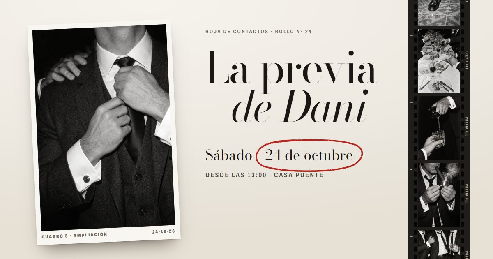
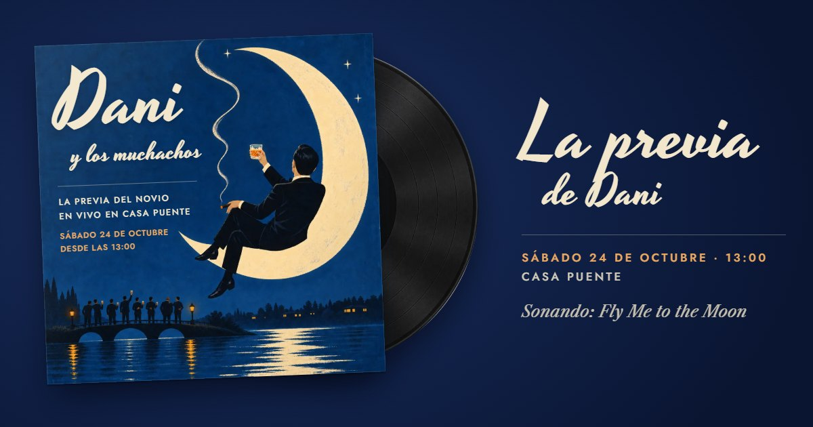

La previa de Dani
Tres opciones para elegir. Abrilas con el volumen alto.
1 · Reserva KemperWhisky y habanos: un humidor que se abre.

2 · Rollo 24Blanco y negro con flash: una hoja de contactos que se revela.

3 · Fly Me to the MoonUn disco de los 60 que gira en el tocadiscos.